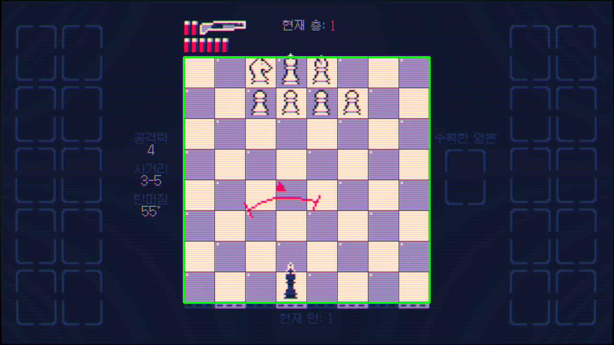

Shotgun King
Reinforcement Learning
화면 분석 및 Deep Q-Network 기반의
샷건 킹 게임 자동 플레이 에이전트(Agent) 개발 프로젝트
시스템 아키텍처
01
화면 캡처
mss 라이브러리를 활용하여 게임 화면을 실시간으로 고속 캡처합니다.
02
상태 분석
체스판 영역 분할, 기물 기하 분석 및 템플릿 매칭(Template Matching)을 거쳐 상태 정보로 변환합니다.
03
의사 결정
추출한 281차원 상태 벡터(State Vector)를 인공신경망에 전달하여 최적의 행동(Action) 값을 계산합니다.
04
입력 제어
PyAutoGUI 입력을 모사하여 마우스 클릭과 키보드 조작을 게임에 실시간으로 반영합니다.
강화학습 환경 사양
관측 공간 (Observation Space) : 281차원
| 인덱스 영역 | 벡터 내용 |
|---|---|
| 0 - 63 | 8x8 그리드 기물 위치 행렬(Board Matrix) |
| 64 - 127 | 8x8 적 공격 경로 위험 행렬(Threat Matrix) |
| 128 - 129 | 장전 및 예비 탄약 수량 상태(Ammo Status) |
| 130 - 132 | 플레이어 무기 사거리 및 확산도 사양 |
| 133 - 152 | 현재 활성화된 카드 버프 및 디버프 정보 |
| 153 - 280 | 적 기물 체력 및 턴 행동 속도 행렬 |
행동 공간 (Action Space) : 가변 이산 행동
기본 모드 (10개 행동)
8방향 1칸 이동, 무기 재장전(Reload), 근접 적 대상 사격 제어 행동을 포함합니다.
강화 모드 (18개 행동)
이동 버프 획득 시 2칸 뛰어넘기 이동 행동 8개가 추가로 개방되는 동적 구성입니다.
이미지 처리 파이프라인 (Image Pipeline)
보드 영역 로컬라이제이션 (Localization)
1280x720 윈도우 스크린샷 내에서 520x520 영역의 체스판을 정확히 분할하여 좌표를 표준화합니다.
셀 분할 및 기물 분류 (Classification)
64개의 개별 셀(Cell)을 65x65 크기로 분할한 후 템플릿 매칭 및 기하 윤곽 검출을 통해 기물 종류를 인식합니다.
탄약 상태 분석 (OCR)
특정 UI 영역의 붉은 픽셀 분포 개수를 연산하여 잔여 탄수를 실시간 수치 데이터로 환산합니다.

모델 아키텍처 및 학습 정보
DQN 정책 네트워크 (Policy Network)
281차원 입력을 받아 128유닛 및 64유닛 선형 레이어를 거쳐 최종 Q-value를 예측하는 MLP 구조입니다.
최적화 및 손실 함수 (Optimization)
MSE 손실 함수와 Adam 옵티마이저를 통해 학습을 진행합니다.
경험 데이터 관리 (Replay Buffer)
Replay Buffer를 통해 미니배치 샘플의 상관관계를 끊고 학습 성능을 안정화합니다.